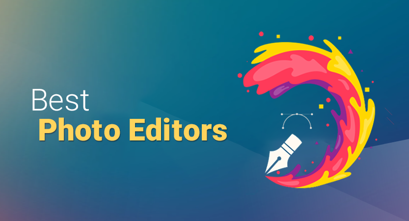
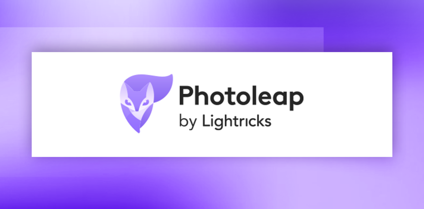
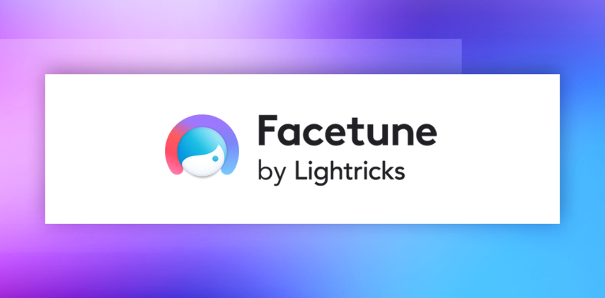

Top Photo Editors 2025
Josephine Nguyen | Updated on May 7th 2024Content Manager & Graphic Design Specialist In a hurry? Here are the top Photo Editing Apps for 2025:
Nowadays, we're more inclined to reach for our smartphones when capturing moments, reflecting the increasing quality of smartphone cameras. In fact, with their impressive levels of quality, using a smartphone for photography doesn't even feel like a compromise anymore.
Today's leading phones, like the iPhone 14 Pro, Pixel 7 Pro, and Galaxy S22 Ultra, boast incredible cameras that can rival DSLRs, while even more budget-friendly options like the Pixel 6A or iPhone SE can produce shots that dazzle your Instagram followers.
Yet, despite these improved phone cameras, there are still times when our snapshots fall just short of perfection. Whether it's a group photo taken in a dimly lit bar or a breathtaking landscape shot that could use a touch of magic, there's often room for improvement.
However, using desktop photo editing software can be inconvenient and time-consuming. Often, we find ourselves wanting to make quick tweaks to our photos before sharing them on social media. Fortunately, there's a wealth of powerful photo editing apps available for both iPhone and Android that offer the same level of power and effectiveness as desktop or web apps.
And you’ll be amazed at how much you can do with these mobile editing apps! Whether it's snapping selfies, capturing your pet's antics, or taking a photo of that strawberry parfait for the ‘gram, these apps can really make your photos stand out. They offer everything from basic tweaks to advanced editing tools like masking, tone adjustments, and color correction, which were once only available on desktop programs.
Whether you’re a casual photographer, a pro or a social media influencer, there's a photo editing app out there tailored to your needs.
An overview of the best Photo Editors for 2025:
- 🥇 1. Photoleap — With Photoleap, you can effortlessly change backgrounds, animate your photos, remove unwanted objects, craft collages, apply filters and effects, and create captivating otherworldly scenes, all directly from your mobile device!
- 🥈 2. Facetune — This is the ultimate selfie editor for photos and videos, featuring a comprehensive toolkit to enhance your smartphone selfies. Instantly brighten teeth, erase blemishes and acne, define facial contours, blur backgrounds, apply makeup, and beyond!
- 🥉 3. Luminar Neo — Billed as a rival to Adobe's Lightroom and Photoshop, Luminar Neo is a robust photo editing tool that seamlessly enhances your editing skills with cutting-edge AI-powered features.
- Frequently Asked Questions about Graphic Design (FAQ).
If you're still on the fence about whether a photo editing app is worth it, here are eight compelling reasons why you should consider integrating one into your photography toolkit.
- Convenience: With photo editing apps on your mobile phone, you have the convenience of editing your photos anytime, anywhere. Whether you're on a commute, waiting in line, or simply relaxing at home, you can easily tweak and enhance your images without needing access to a computer.
- Instant Editing: Photo editing apps allow you to make quick adjustments and enhancements to your photos in real-time. This means you can instantly improve your images before sharing them with friends or posting them on social media.
- Creative Control: With a wide range of editing tools and features at your fingertips, photo editing apps empower you to unleash your creativity. From adjusting brightness and contrast to applying filters and effects, you have full control over how your photos look.
- Professional-Looking Results: Many photo editing apps offer advanced editing capabilities that can help you achieve professional-looking results. Whether you're removing blemishes, adding text overlays, or fine-tuning colors, these apps enable you to elevate the quality of your photos with ease.
- Social Media Integration: Photo editing apps seamlessly integrate with social media platforms, allowing you to edit and share your photos directly to sites like Instagram, Facebook, and Twitter. This streamlines the sharing process, ensuring your edited photos can be easily shared with friends and followers.
- Cloud Storage and Synchronization: Many photo editing apps offer cloud storage and synchronization features, allowing you to access your photos and edits across multiple devices. This means you can continue editing seamlessly, regardless of which device you're using.
- Artificial Intelligence (AI) Enhancements: With advancements in AI technology, many photo editing apps now incorporate AI-powered features such as automatic photo enhancement, object removal, and subject recognition. These features can speed up the editing process and help you achieve better results with minimal effort.
- Cost-Effective: Unlike desktop photo editing software, many mobile photo editing apps are available for free or at a low cost. This makes them a cost-effective solution for users who want to improve their photos without investing in expensive software.
Overall, photo editing apps for mobile phones offer a range of benefits, from convenience and instant editing capabilities to creative control and professional-looking results. Whether you're a casual photographer or a seasoned pro, these apps can help you take your photos to the next level.
1. Photoleap — Best Smartphone Photo Editor

Photoleap is an impressive mobile photo editing app that can turn your ordinary photos into extraordinary works of art. With its comprehensive editing tools like merge, double exposure, and layers, you have complete control over customizing and enhancing your photos.
What sets Photoleap apart, however, is its wide range of AI-based transformation tools, which are incredibly useful for content creators. With features like AI Scenes, FaceSwitch, and Text to Image, you can enhance image quality, colorize photos, or remove backgrounds and objects with just one tap.
But that's not all—Photoleap allows for endless creativity by letting you experiment with different styles and aesthetics. Whether you want to create various versions of yourself, revamp your home decor, turn your pets into fun avatars, or morph faces with celebrities, the possibilities are endless. Plus, it comes with built-in presets for quick and easy editing, similar to popular apps like VSCO or Lightroom.
In summary, Photoleap is a robust and adaptable photo editing app suitable for users of all skill levels, from beginners to experts. It introduces a fresh, intelligent, and user-friendly approach to photo editing, offering a full range of tools to edit, resize, and manipulate images, similar to other apps—but with the added advantage of a comprehensive suite of AI editing functions and automatic features. It’s particularly beneficial for busy content creators seeking to maintain a dynamic presence on social media platforms. Give it a try for 7 days and see how it can elevate your photo editing game!
Get Photoleap - Stunning Photos In Seconds!
2. Facetune — Best App For Editing Selfies

Facetune is the ultimate selfie companion, offering professional-quality photo editing tools right at your fingertips. Designed specifically for portraits and group photos, this app provides a range of features to enhance the overall appearance of subjects in your photos.
With ten powerful tools including Crop, Whiten, Smooth, and more, Facetune allows you to perfect every detail of your selfie. Whether you're covering up imperfections with the Patch tool or reshaping features with the Reshape tool, achieving flawless results is effortless.
Facetune also stands out with its intuitive interface and precise editing capabilities. Each tool is tailored for specific tasks, ensuring that you can easily navigate through minor tweaks and nuances to achieve the best results.
Moreover, Facetune offers convenient features like the ability to undo any change and preview the original photo before editing. Once you've perfected your selfie, sharing it with the world is seamless with integration with popular social networks and services.
Overall, Facetune is the go-to app for anyone looking to enhance their selfies with professional-grade editing tools. With a comprehensive range of features, from quick touch-ups to complete makeovers, including trying on hairstyles and removing objects, Facetune offers everything you need to perfect your photos. Whether you're sharing on social media or refining your personal collection, Facetune empowers you to effortlessly showcase your best self.
Get Facetune - Stunning Photos In Seconds!
3. Luminar Neo — Best Graphic Design App
Luminar Neo, developed by Skylum, emerges as a versatile and powerful photo editing software.
The standout feature of Luminar Neo is its AI-driven capabilities, designed to streamline the editing process and achieve stunning results with minimal effort. With tools like Accent AI 2.0 and Atmosphere AI, you can enhance your images with natural-looking adjustments that bring out the best in every photo.
One of the key highlights of Luminar Neo is its versatility. Whether you're a landscape photographer looking to enhance the sky with SkyAI or a portrait photographer in need of AI Skin Enhancer, Luminar Neo offers a wide range of tools to suit your creative vision.
The software's user-friendly interface also makes it accessible to photographers of all skill levels. With customizable workspaces and non-destructive editing, you can freely experiment with different adjustments and revert to the original image at any time. Additionally, seamless integration with popular editing software like Lightroom and Photoshop allows you to incorporate Luminar Neo into your existing workflows effortlessly.
We like Luminar Neo for its intuitive interface and innovative AI-powered tools that caters to both beginners and seasoned professionals. With its comprehensive editing toolkit, complete with customizable filters and presets, achieving your desired aesthetic has never been easier.
Get Luminar Neo - Stunning Photos In Seconds!
How we chose the Top Photo Editors for 2025
We examined a variety of apps with different focuses and purposes. To create our evaluation criteria, we made sure to assess each app's strengths and weaknesses according to its intended use. We evaluated all apps in the following areas:
- User Interface: We looked at how clear, intuitive, and easy to navigate each app's interface was.
- User-Friendliness: We evaluated how straightforward and user-friendly the apps were in terms of their operation and features.
- Feature Quantity and Quality: We scrutinized the variety and effectiveness of features offered by each app.
- Furthermore, we conducted specific assessments on the app's ability to import photos from various sources, the functionality of its camera module (if applicable), the breadth and user-friendliness of its editing tools, and the effectiveness and user experience of its collaging and project features.
Top Photo Editing Apps- Frequently Asked Questions (FAQ)
📸 What are photo editing apps?
Photo editing apps are software applications designed for mobile devices that allow users to edit, enhance, and manipulate digital photos directly on their smartphones or tablets.
📱 What features do photo editing apps typically offer?
Photo editing apps offer a wide range of features, including basic adjustments such as cropping, resizing, and rotating, as well as advanced tools like filters, effects, retouching, and text overlays. Some apps also include features like collage makers, drawing tools, and batch editing.
💰 Are photo editing apps free to use?
Many photo editing apps offer a free version with basic features, while others may require a one-time purchase or subscription for access to more advanced tools and functionalities. Some apps offer in-app purchases for additional features or content.
💻 Can photo editing apps replace desktop software?
While photo editing apps offer a wide range of editing tools and capabilities, they may not fully replace desktop software for professional photographers or advanced editing tasks. However, for many users, especially those editing photos for social media or personal use, photo editing apps provide sufficient functionality and convenience.
📷 Can photo editing apps save edited photos in high quality?
Most photo editing apps allow users to save edited photos in high resolution, preserving image quality for printing or sharing on social media platforms. However, it's essential to check the settings and export options within each app to ensure the desired level of quality is maintained.
Transparency and Trust: The aim of this website is to help you find the perfect software for your needs in an easy-to-view comparison list. You can read more about how we review and about our background in the About Us section of this website. Software.fish does not feature all of the software available in the market, we cherry-pick what we consider to be the leaders in each vertical. We try to keep this site updated and fresh, but cannot guarantee the accuracy of the information as well as the prices featured at all times. All prices quoted on this site are based on USD so there could be slight discrepancies due to currency fluctuations. Although the site is free to use, we do earn commissions from the software companies that we have partnered with. If you click on one of our links and then make a purchase, we will get paid by that company. This has an impact on the ranking, score, and order in which the software is presented in our list and elsewhere throughout the site. Software listings on this page DO NOT imply endorsement.